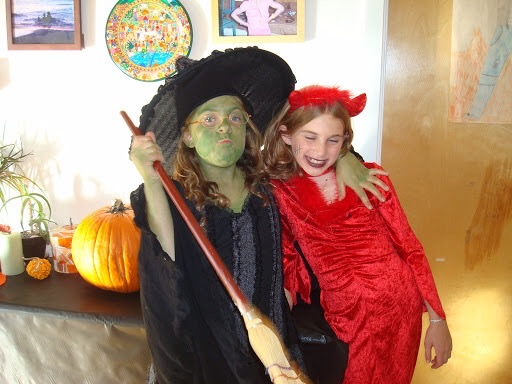
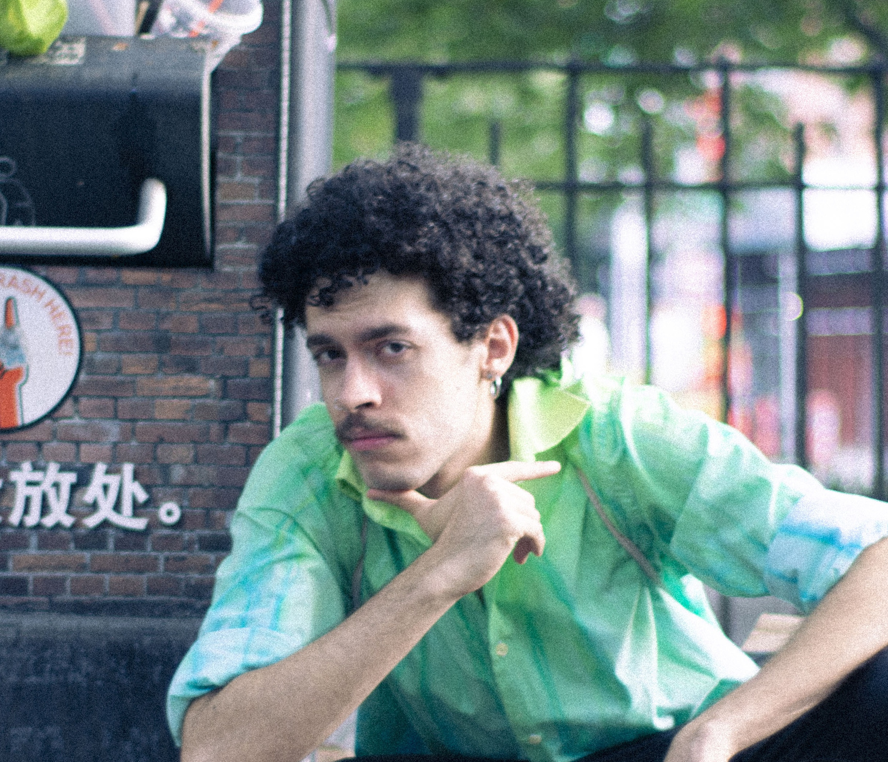
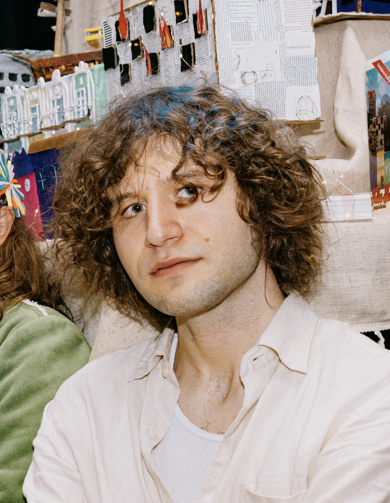
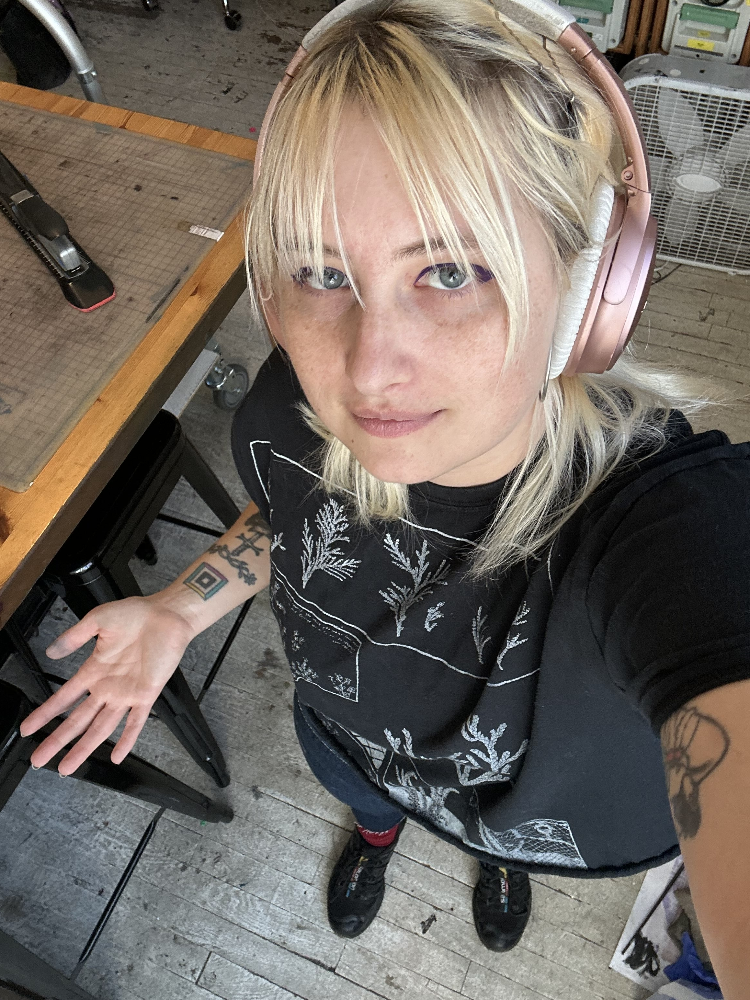
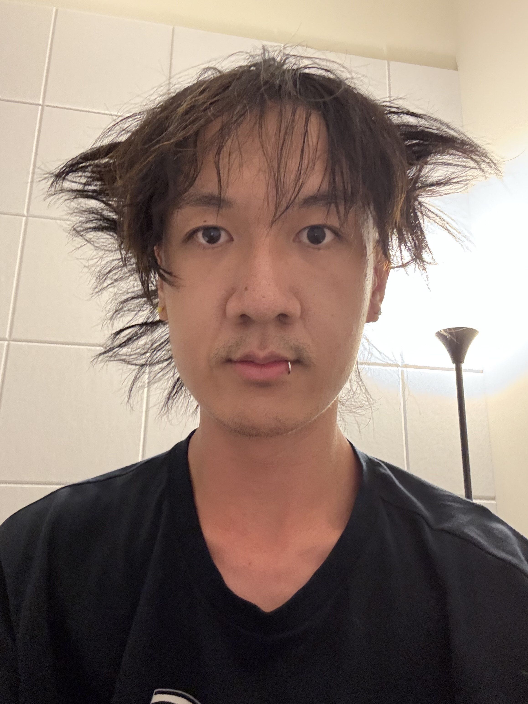
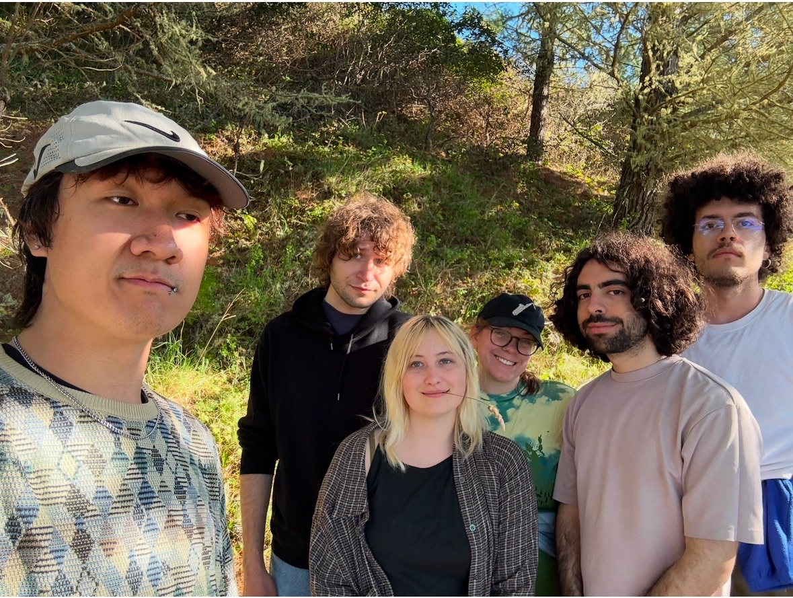
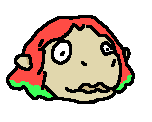

Antonio grew up in Rio de Janeiro, Brazil. For a while he worked as a full-stack software engineer, then he moved to Brooklyn and started making games. He enjoys horror movies, crossword puzzles and staring wistfully into the ocean.
Antonio's Website
Game Dreamer
Hatim makes videogames, comics, and music as well. He likes to go swimming and he grew up in Rabat.
hatim.tips/
Whether he’s building narrative adventures, party games, or systems-driven experiments, Biagi’s work explores the peculiarities of human existence—with humor, with play, and with deep love for the weird little bonds that form when we interact.
Biagi's Website


Game Necromantic
Nichole is an interdisciplinary poetic aberration. They dream of rotating cows in their head and trees that sleep to rainy mood. When they turn on the computer, they like to make games for it so it has something to do.
Nichole's Website
Isabelle Smith is a game developer and writer who makes digital games you can reach out and touch. She’s a graduate of UCLA’s playwriting undergraduate program and NYU’s game design MFA. She had seven wisdom teeth but they’re not in her mouth anymore.
Isabelle's Website
Hanwen Xu is a non-binary elder brother and multimedia artist. Their work blends maximalist, fleshy aesthetics with desire, grief, old internet, and obscure sorrow.
Han's Website

